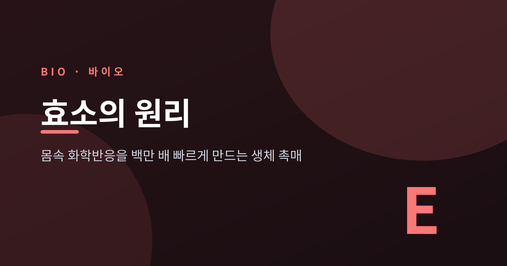
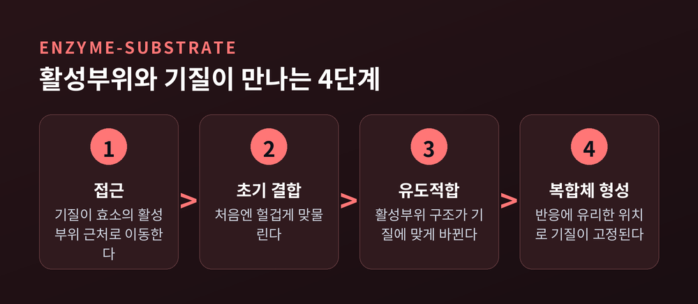
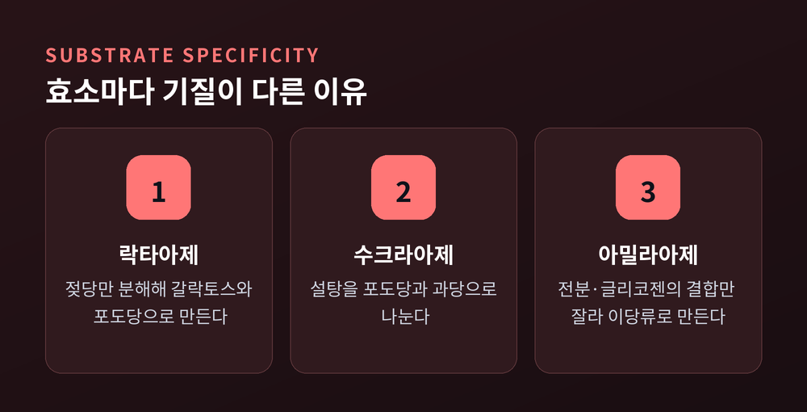
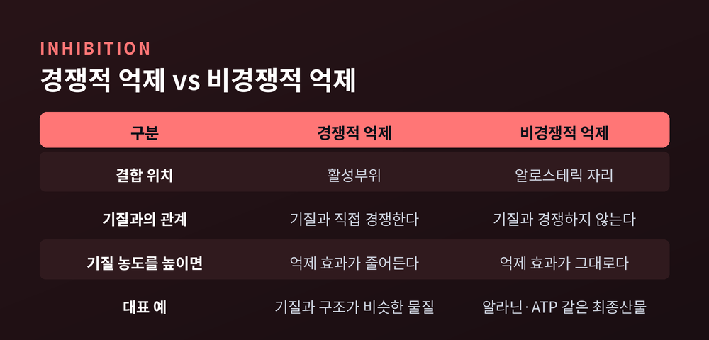
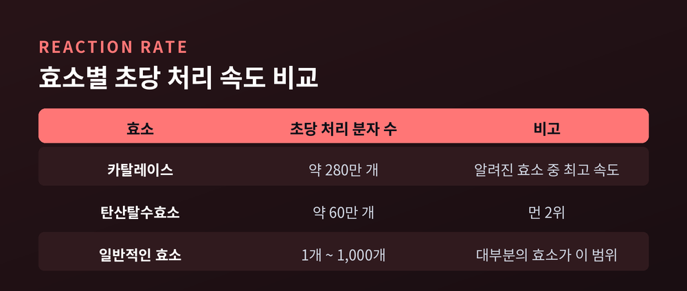

이번 글에서는 효소가 몸속 화학반응을 얼마나, 그리고 어떻게 빠르게 만드는지 정리해 보겠습니다. 활성부위와 기질이 만나는 방식, 온도·pH에 따라 활성이 달라지는 이유, 그리고 몸이 효소를 조절하는 방법까지 다룹니다.
몸속에서는 매 순간 수천 가지 화학반응이 일어납니다. 음식을 소화하고, 에너지를 만들고, DNA를 복제하는 모든 과정이 화학반응입니다.
문제는 이 반응들이 저절로는 너무 느리다는 데 있습니다. 반응이 일어나려면 반응물이 불안정한 고에너지 상태, 즉 전이 상태를 거쳐야 하는데, 이 봉우리를 넘는 데 필요한 에너지가 활성화 에너지입니다.
미국 노스캐롤라이나대(UNC) 연구팀이 조사한 사례가 이를 잘 보여줍니다. 생명 유지에 필수적인 어떤 반응은, 효소 없이는 완결되는 데 약 23억 년이 걸립니다. 지구 나이의 절반에 가까운 시간입니다. 같은 연구자 그룹이 보고한 다른 반응은 반감기가 1조 년에 달하지만, 해당 효소가 있으면 단 10밀리초 만에 끝납니다.
효소는 바로 이 활성화 에너지 장벽을 낮춰주는 생체 촉매입니다. 대부분 단백질로 이루어져 있고, 반응이 끝난 뒤에도 자신은 변하지 않아 계속 재사용됩니다. 일반적으로 효소는 촉매되지 않은 반응보다 속도를 최소 100만 배(10⁶배) 이상, 많게는 10억 배 넘게 끌어올린다고 알려져 있습니다. 제목의 "백만 배"는 과장이 아니라 가장 보수적으로 잡아도 그렇다는 뜻입니다.
여기서 오해하기 쉬운 부분이 하나 있습니다. 효소가 활성화 에너지를 낮춘다고 해서, 원래 일어날 수 없는 반응을 억지로 일으키는 것은 아닙니다.
효소는 반응물과 생성물 사이의 전체 에너지 차이(자유에너지 변화)는 건드리지 않습니다. 대신 반응이 통과해야 하는 전이 상태를 훨씬 강하게 붙잡아 안정화시킵니다. 등산에 비유하면, 산 정상의 높이(전체 에너지 차이)는 그대로 두고, 정상으로 가는 고갯길(활성화 에너지)만 낮춰주는 셈입니다.
이 과정에서 효소의 활성부위에 정밀하게 배치된 아미노산 잔기들이 산-염기 촉매 역할을 합니다. 산성 또는 염기성을 띠는 특정 아미노산이 정확한 위치에 자리 잡고 있다가, 반응물의 화학결합을 끊거나 만드는 데 직접 관여하는 방식입니다.
정리하면 이렇습니다. 효소는 없던 길을 새로 뚫는 게 아니라, 이미 있던 길 중 가장 가파른 고개를 완만하게 만들어주는 존재입니다.

효소가 작용하는 표적 분자를 기질(substrate)이라 부릅니다. 그리고 효소 표면에는 기질이 들어와 결합하는 특정한 틈이나 홈이 있는데, 이를 활성부위(active site)라고 합니다.
활성부위는 아무렇게나 생긴 구멍이 아닙니다. 폴리펩타이드 사슬의 서로 다른 부분에 흩어져 있던 아미노산들이, 단백질이 접히는 3차 구조 과정에서 한곳으로 모여 만들어진 정밀한 공간입니다.
효소와 기질이 만나면 효소-기질 복합체(enzyme-substrate complex)가 형성됩니다. 이 복합체 안에서 기질은 반응이 일어나기 가장 유리한 위치와 방향으로 붙들립니다. 무작위로 떠다니던 분자들이 서로 부딪혀야 반응이 일어나는 것과 비교하면, 효소는 애초에 반응이 잘 일어나는 자리로 반응물을 데려다 놓는 셈입니다.
효소와 기질이 결합하는 방식을 설명하는 모델은 두 가지가 있습니다.
먼저 1894년 에밀 피셔가 제안한 자물쇠-열쇠(lock-and-key) 모델입니다. 활성부위가 딱딱하게 고정된 형태이고, 기질과 처음부터 완벽하게 들어맞는다고 보는 관점입니다. 자물쇠에 맞는 열쇠 하나만 들어가는 것과 같습니다.
다만 이 모델에는 한계가 있습니다. 결합이 지나치게 안정적이면 오히려 활성화 에너지가 낮아지지 않거나, 되레 높아질 수 있기 때문입니다. 너무 꽉 끼는 결합은 반응을 촉진하기보다 방해할 수 있다는 뜻입니다.
그래서 1958년 대니얼 코쉬랜드가 제안한 유도적합(induced fit) 모델이 지금은 더 정확한 설명으로 받아들여집니다. 이 모델에서 활성부위는 고정된 틀이 아니라 유연한 형태입니다. 기질이 처음 결합할 때는 헐겁게 맞물리지만, 이후 효소와 기질 양쪽에서 입체 구조가 조금씩 바뀌면서 더 꼭 맞는 형태로 조정됩니다.
흥미로운 점은, 유도적합 모델에서 활성부위가 목표로 하는 형태가 기질 자체가 아니라 전이 상태라는 사실입니다. 처음엔 헐겁던 결합이 반응이 진행되며 전이 상태와 가장 잘 맞는 모양으로 바뀌고, 그 과정에서 활성화 에너지가 낮아집니다. 예전엔 열쇠가 자물쇠에 맞듯 고정된 결합으로 설명했다면, 지금은 서로 조금씩 모양을 맞춰가는 유연한 결합으로 이해하는 셈입니다.

효소 이름은 대개 기질 이름 뒤에 "-아제(-ase)"를 붙여 짓습니다. 이름만 보아도 어떤 물질에 작용하는지 짐작할 수 있는 구조입니다.
몇 가지 예를 보면 감이 잡힙니다. 락타아제는 젖당의 특정 결합만 끊어 갈락토스와 포도당으로 분해합니다. 수크라아제는 설탕을 포도당과 과당으로 나눕니다. 아밀라아제는 전분과 글리코젠의 특정 결합만 가수분해해 다당류를 이당류로 잘라냅니다.
이렇게 효소가 특정 기질에만 반응하는 성질을 기질 특이성이라 부릅니다. 그 근원은 활성부위의 정밀한 화학적 구성입니다. 특정한 화학 구조를 가진 분자만 들어맞는 주머니 형태로 만들어져 있기 때문에, 락타아제는 설탕을 분해하지 못하고 수크라아제는 젖당을 분해하지 못합니다.
이 특이성 덕분에 몸속에서는 수천 가지 반응이 동시에 일어나면서도 서로 뒤엉키지 않습니다. 각자의 열쇠 구멍에 맞는 열쇠만 작동하는 구조라고 보시면 됩니다.
모든 효소에는 활성이 가장 높은 최적 온도가 있습니다. 온도가 오르면 분자 운동이 활발해져 어느 지점까지는 반응 속도가 함께 올라갑니다. 하지만 특정 온도를 넘어서면 열이 효소를 지탱하는 수소결합 등을 깨뜨려, 3차원 입체 구조를 잃게 만듭니다. 이것이 변성(denaturation)입니다.
사람 몸속 효소 대부분은 체온인 섭씨 37도 부근에서 가장 활발하게 일하고, 그보다 훨씬 높거나 낮은 극단적 온도에서는 기능이 떨어지거나 아예 망가집니다. 고열이 지속되면 몸이 위험해지는 이유 중 하나도 여기에 있습니다.
pH도 마찬가지입니다. 효소별로 최적 pH 구간이 따로 있고, 이 범위를 벗어나면 효소가 띠는 전하가 바뀌면서 입체 구조를 지탱하던 이온결합이 무너집니다. 위에서 일하는 펩신은 강산성 환경에서, 소장에서 일하는 트립신은 약염기성 환경에서 각각 최적으로 작동하도록 설계돼 있는 식입니다.
한 가지 아쉬운 점은, 온도에 의한 변성은 대개 되돌릴 수 없다는 사실입니다. 한번 풀어진 단백질 구조는 냉각한다고 다시 원래대로 돌아가지 않는 경우가 많습니다. 계란을 삶으면 다시 날달걀로 되돌릴 수 없는 것과 같은 이치입니다.
일부 효소는 자기 힘만으로는 촉매 활성을 내지 못하고, 추가적인 도우미 물질이 필요합니다. 이를 보조인자(cofactor)라 부릅니다.
보조인자가 유기화합물이면 특별히 조효소(coenzyme)라고 구분해 부릅니다. 보조인자는 대개 아연, 철 같은 무기 미네랄이고, 조효소는 대개 비타민에서 유래한 유기물입니다. NAD+, NADP+, FAD, 조효소 A(CoA) 등이 대표적인 조효소입니다.
비타민을 충분히 섭취해야 하는 이유 중 하나가 여기 있습니다. 조효소가 부족하면 아무리 효소 단백질 자체는 멀쩡해도 제 기능을 하지 못합니다. 열쇠(효소)는 있는데 열쇠고리(조효소)가 없어 문을 열지 못하는 상황과 비슷합니다.

효소가 늘 활성화 상태로 일하기만 하면 몸은 오히려 위험해집니다. 필요할 때만 일하고 필요 없을 땐 멈추도록 조절하는 장치가 있습니다.
대표적인 것이 경쟁적 억제와 비경쟁적 억제입니다. 경쟁적 억제제는 기질과 구조가 비슷하게 생겨, 활성부위 자리를 두고 기질과 직접 경쟁합니다. 이 경우 기질 농도를 충분히 높이면 억제 효과를 어느 정도 이겨낼 수 있습니다.
반면 비경쟁적 억제제는 활성부위가 아니라 그 바깥의 알로스테릭 자리(allosteric site)에 결합합니다. 이 결합은 효소의 입체 구조 자체를 바꿔버려, 그 여파로 활성부위 모양까지 변형시킵니다. 그 결과 기질이 아무리 많아도 활성부위에 제대로 들어맞지 않게 되어, 기질 농도를 높여도 억제가 풀리지 않습니다.
알로스테릭 조절은 억제제뿐 아니라 활성을 높이는 활성화제까지 포함하는 더 넓은 개념입니다. 그중 몸이 즐겨 쓰는 방식이 되먹임 억제(feedback inhibition)입니다. 대사 경로의 최종 산물이 쌓이면, 그 산물 스스로가 경로 앞단의 효소를 막아 생산을 줄이는 자기조절 방식입니다.
실제 사례로, 해당과정의 마지막 단계를 촉매하는 피루브산 인산화효소는 알라닌과 ATP 모두에 의해 비경쟁적으로 억제됩니다. 에너지(ATP)가 이미 충분히 쌓였다면, 그 산물 자체가 "이제 그만 만들어도 된다"는 신호를 앞단 효소에 보내는 셈입니다. 공장에서 재고가 넘치면 생산 라인을 스스로 줄이는 것과 비슷한 원리입니다.

효소의 속도감을 가장 잘 보여주는 사례가 카탈레이스(catalase)입니다. 세포 대사 과정에서 생기는 과산화수소(H2O2)는 세포를 산화 손상시킬 수 있는 위험한 부산물인데, 카탈레이스는 이를 물과 산소로 분해해 세포를 보호합니다.
카탈레이스 분자 하나는 1초에 과산화수소 분자를 최대 약 280만 개까지 분해할 수 있습니다. 일부 문헌은 이보다 더 높은 수치를 보고하기도 하는데, 측정 조건에 따라 편차가 있는 것으로 보입니다. 다만 어느 수치를 기준으로 삼아도, 카탈레이스가 알려진 효소 중 가장 빠른 축에 속한다는 결론은 달라지지 않습니다.
비교하자면, 이산화탄소를 중탄산염으로 바꾸는 탄산탈수효소는 초당 약 60만 개 분자를 처리해 "먼 2위"로 언급됩니다. 그리고 대부분의 일반적인 효소는 초당 1개에서 1,000개 분자 수준을 처리합니다. 카탈레이스의 처리 속도가 얼마나 예외적인지 짐작할 수 있습니다.
상처에 과산화수소수를 발랐을 때 거품이 부글부글 이는 장면을 떠올려보시면 됩니다. 그 거품이 바로 카탈레이스가 순식간에 과산화수소를 물과 산소로 분해하는 현장입니다.
정리하면 이렇습니다. 효소는 활성화 에너지라는 고갯길을 낮춰 반응을 100만 배 이상 빠르게 만들고, 활성부위는 유도적합 방식으로 기질을 정확히 붙잡으며, 온도·pH·억제·되먹임이라는 정교한 장치들이 그 속도를 필요한 만큼만 통제합니다.
"몸속 화학반응은 저절로 빠른 게 아니라, 효소가 매 순간 빠르게 만들고 있는 것이다"
이 한 문장이 효소를 이해하는 가장 정확한 출발점이 아닐까 생각합니다.
다음에 상처에 소독약을 바르다 거품이 이는 걸 보신다면, 그 안에서 초당 수백만 번씩 일하고 있는 카탈레이스를 한번 떠올려 보시길 권합니다.